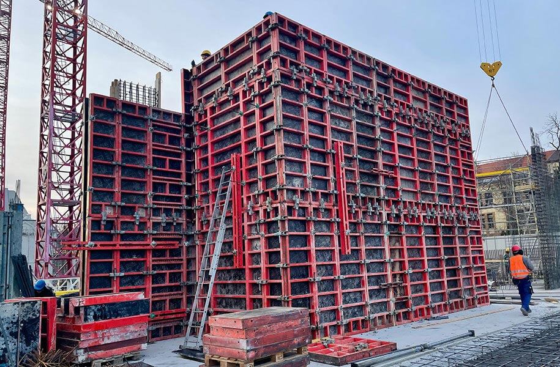
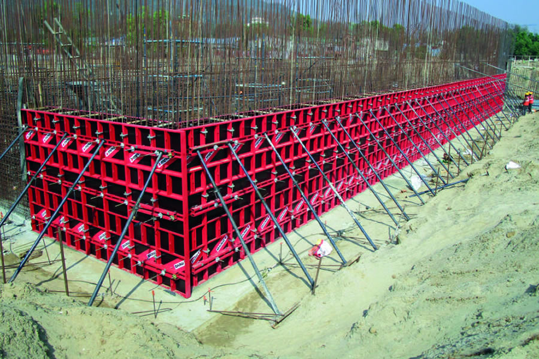

Ha nagyon egyszerűen akarjuk kifejezni magunkat, akkor a zsalu az a forma, amibe a beton kerül. Már gyerekkorunkban is alkalmaztuk a használatát, csak akkor a nedves homokot töltöttük a formákba. Ma nagyjából ugyanezt fogjuk csinálni, azonban az adott formából falak, lépcsők, födémek, rámpák és épületek készülnek, feltéve, ha szakemberre bízzuk a feladatot.
Ahogy fentebb már olvashattuk, a zsalu szoros kapcsolatban áll a betonnal, gondoskodik arról, hogy ne essen szét, tehát egyben tartja, formázza. Azonban egyáltalán nem mindegy, hogy mihez készítjük a zsalut.

A munka megkezdése előtt meg kell határoznunk, hogy milyen típusú zsaluzatot fogunk alkalmazni a
kivitelezéshez.
Ehhez először meg kell vizsgálni a tervrajzokat, ezután el kell dönteni, hogy
pontosan milyen zsalut szeretnénk használni.
A hagyományos fa zsaluzatok előnye, hogy a helyszínen készítjük el méretre, különböző fa elemekből, ács munkával. Hátrányuk, hogy időigényes az elkészítése, ezáltal nem egy költséghatékony megoldás.
A rendszerzsaluzatok, különböző méretű előregyártott acél vagy alumínium vázszerkezetű elemekből állnak, fa vagy műanyag héjjal borítva.
A csúszó zsaluzatok lényege, hogy a zsaluzatot szakaszosan vagy folyamatosan tolják előre, és az előző munkafázisban elkészült betonszerkezethez rögzítik. Magyarországon nagyon ritka esetben alkalmazzák ezt a zsalu típust például hidak, toronyházak kivitelezésénél.